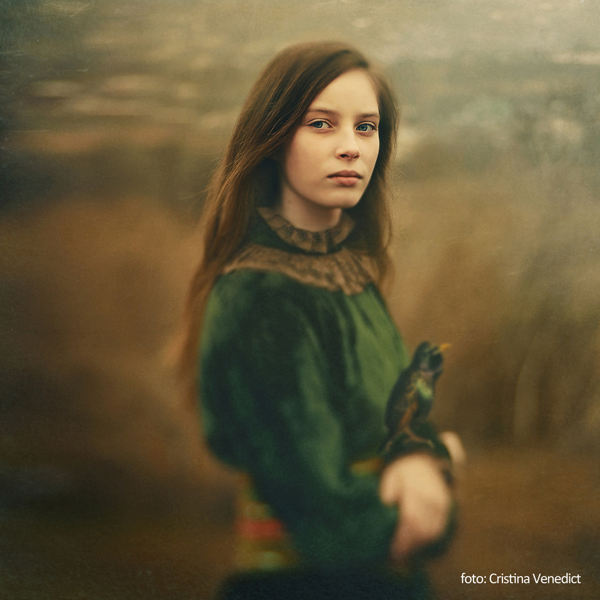
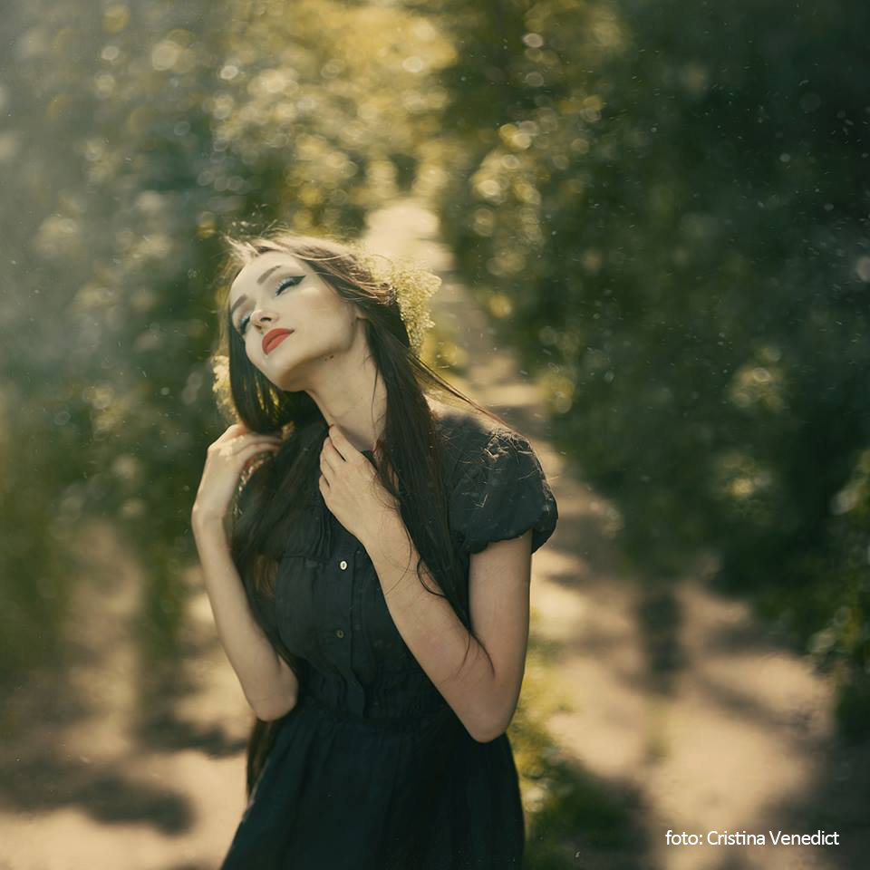
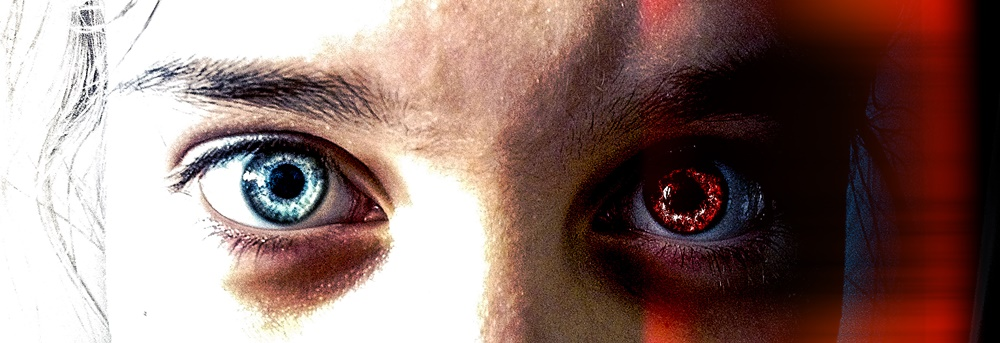

Fotografia de portret - sfaturi
Când realizăm un portret, lumina, compoziția și impresia generală a mediului joacă un rol important. Elementele ce înconjoară subiectul pot face o imagine mai atragătoare sau o pot încărca cu detalii care ne vor distrage atenția de la ceea ce este important. De fapt, portretul ar trebui să fie rezultatul unui studiu asupra trăsăturilor individuale ale personajului, dar și asupra mediului.
#1 Lumina și fundalul
Lumina naturală este mult mai oportună captării tonurilor pielii, dar și a întregii game de culori din care se compune subiectul. Cel mai bun moment pentru a face o fotografie de portret ar putea fi în timpul zilei, afară, într-un moment în care poți valorifica la maximum lumina soarelui.
Vei dori să găsești o locație în care lumina să cadă pe subiect dintr-o parte.
#2 Ochii
Dintre toate trăsăturile feței, ochii sunt cei mai importanți pentru portret, întrucât prin intermediul privirii transmitem cel mai adesea emoțiile. Chiar și o schimbare subtilă a privirii va induce mai departe expunerea unor sentimente și emoții diferite.
Fotografia de portret este cea care transmite un mesaj folosindu-se întotdeauna de un subiect uman, de un zâmbet, o stare de spirit și o pereche de ochi. La final, dincolo de echipament, planuri, unghiuri sau lumină, fotografia de portret înseamnă emoție. Înseamnă interacțiune între fotograf și model, comunicare și poveste.